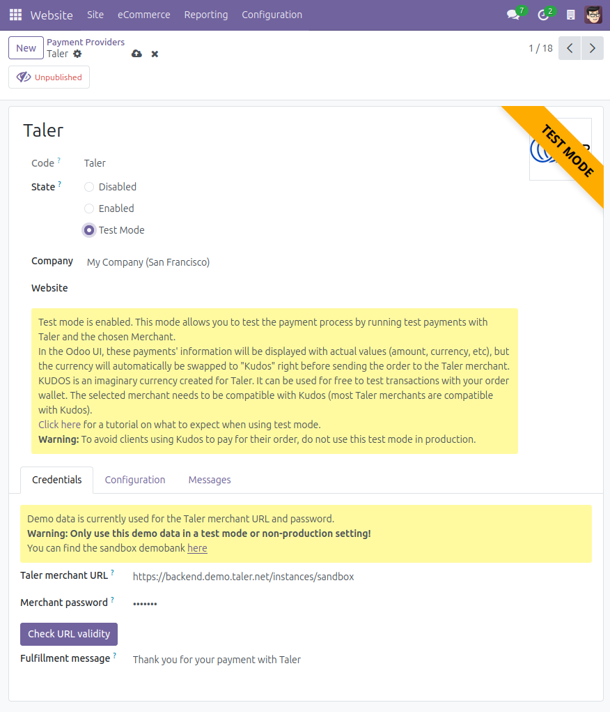
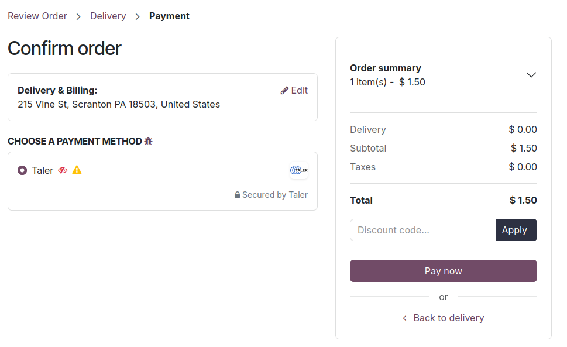
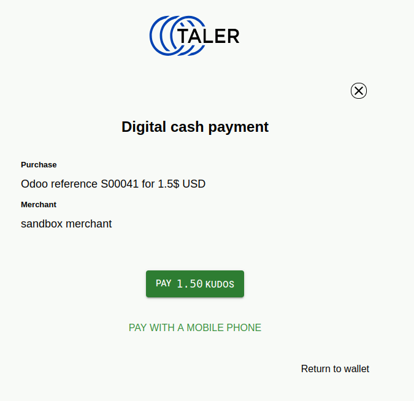
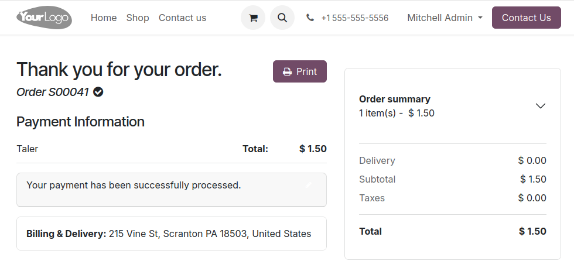

Merchant Test Mode¶
Test the add-on using the merchant test mode¶
The merchant test mode allows you to test the installation of the module, and confirm that the selected merchant are working properly.
Warning
Do not use this mode in production or with published items for sale.
Note
You can decide to keep the payment provider Unpublished when using Test Mode, or to Publish it by clicking the button at the top of the page. If a payment provider is unpublished only an administrator users will be able to see and use the payment provider. It is advised to keep the payment provider unpublished when using the Test Mode.
Note
In the Odoo UI, the payment information will be shown with actual values (amount, currency, etc), but the currency will automatically be swapped to Kudos right before sending the order to the Taler merchant.
Here is an example of the flow for this feature:
On the payment provider’s page, check the
Test Moderadio button.
{kind=link}

Start the process for any online payment, I will show the process for an eCommerce payment.
Navigate to the shop page.
Select any product that you’d like to buy as a test, go to your cart and start the checkout process.
Once you confirm your order, the Taler payment method will appear, with some icons.
{kind=link}

Explanation of the icons:
The red striked-through eye means
Unpublished. It is there to let you know that this payment method is not visible to visitors, only users that have administrator access rights to the shop will be able to see the test mode Taler payment provider.The yellow warning sign means
Test mode. It is there to warn you that the test mode is activated for this payment method.
Pay the order. A corresponding order will be created on the Taler merchant, with a currency change.
The currency originally used will be swapped with
Kudos.Kudos is an imaginary currency created for Taler. It can be used for free to test transactions with your Taler wallet.
A Taler order will be created, you can open it and pay with your wallet. (Notice that the currency is replaced with Kudos.)
{kind=link}

Once the order is paid using the imaginary currency, you will be sent back to the completed Odoo order.
{kind=link}

When this step is done, the test is complete. You have confirmed that the add-on works, and the Taler merchant endpoint can receive your orders for compatible currencies.